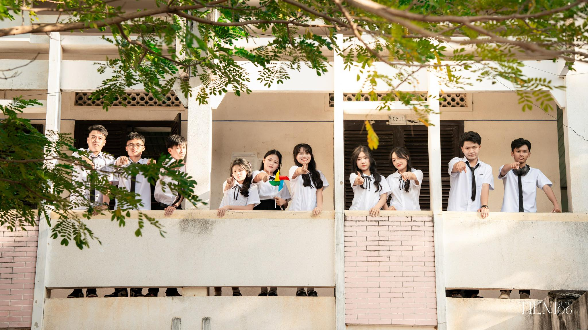
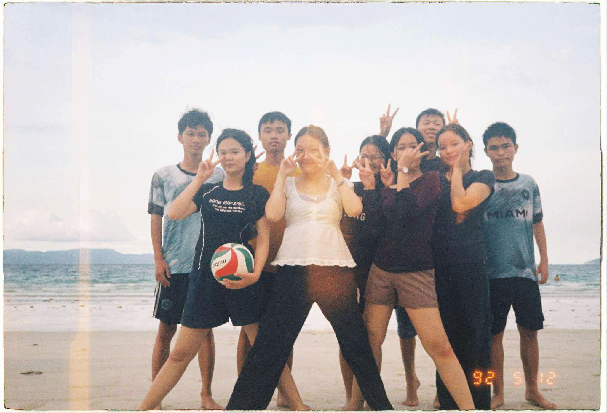

WELCOME TO TỔ VĂN HÓA TRỰC THUỘC TRUNG ƯƠNG 12C3
Có những năm tháng trôi qua rất nhanh, nhanh đến mức chúng ta chưa kịp nhận ra mình đã cùng nhau đi hết một chặng đường. Chúng ta không chỉ là những người bạn cùng lớp, mà là những buổi học chung, những lần nhắc bài khe khẽ, những tiếng cười vang cả góc lớp và cả những lúc cùng nhau cố gắng vì một mục tiêu chung. Cuốn lưu bút online này được tạo ra để lưu giữ lại tất cả những khoảnh khắc ấy — những kỷ niệm bình thường nhưng đáng nhớ, những dòng tâm sự chưa từng nói hết, và cả lời chúc dành cho nhau trong hành trình phía trước. Dù sau này mỗi người có đi một hướng khác nhau, hy vọng rằng khi mở lại những trang này, chúng ta sẽ mỉm cười vì đã từng là một phần thanh xuân của nhau.


Thanh Xuân của chúng ta
Thanh xuân, trong tâm khảm của mỗi người, không chỉ là một con số trên tờ giấy khai sinh mà là một khoảng trời rực rỡ và nồng nhiệt nhất. Đó là những ngày ta dám sai, dám thử, và dám yêu hết mình mà không cần toan tính đến kết quả.Thanh xuân giống như một cơn mưa rào mùa hạ: dù có bị cảm lạnh, người ta vẫn muốn được đắm mình trong đó một lần nữa. Dưới góc nhìn của thực tế, chúng ta thường ví thanh xuân là một "khoản đầu tư" đầy rủi ro nhưng mang lại lợi nhuận là trải nghiệm. Dù đôi khi ta vấp ngã hay đối mặt với những thất bại đầu đời, chính những "vết sẹo" đó đã nhào nặn nên một phiên bản trưởng thành và vững vàng của ngày hôm nay. "Thanh xuân không phải là một thời điểm, mà là một trạng thái tâm hồn."
LỰA CHỌN CHO TƯƠNG LAI
Lựa chọn nghề nghiệp tương lai là một trong những quyết định quan trọng nhất, đánh dấu bước ngoặt trưởng thành của mỗi người. Đó không chỉ là việc tìm kiếm một công việc để mưu sinh, mà còn là hành trình thấu hiểu bản thân để tìm ra điểm giao thoa giữa đam mê, năng lực và nhu cầu của xã hội. Trong thế giới biến động không ngừng, việc chọn nghề đòi hỏi chúng ta phải có cái nhìn tỉnh táo: vừa phải lắng nghe nhịp đập của con tim trước những lĩnh vực mình yêu thích, vừa phải đánh giá khách quan những kỹ năng thực tế mà mình đang sở hữu. Đứng trước những áp lực từ kỳ vọng của gia đình hay xu hướng của đám đông, điều quan trọng nhất là giữ vững định hướng cá nhân và không ngừng trau dồi tri thức. Suy cho cùng, một nghề nghiệp lý tưởng là nơi ta có thể phát huy tối đa giá trị bản thân, đóng góp cho cộng đồng và tìm thấy niềm vui trong mỗi ngày làm việc. Hãy can đảm dấn thân và tin tưởng vào sự lựa chọn của chính mình, bởi sự kiên trì và lòng nhiệt huyết chính là chiếc chìa khóa mở ra cánh cửa thành công phía trước.
__Tìm hiểu thêm về nghề nghiệp tương lai tại đây Web tìm hiểu nghề nghiệp
XU HƯỚNG TUYỂN SINH 2026 DÀNH CHO 2008
Công tác tuyển sinh của Đại học Quốc gia TP.HCM (ĐHQG-HCM) năm 2026 đánh dấu bước chuyển mình quan trọng với mô hình xét tuyển tích hợp đa tiêu chí. Thay vì các phương thức tách biệt như trước, hệ thống dự kiến thống nhất sử dụng một phương thức xét tuyển tổng hợp duy nhất (bên cạnh diện tuyển thẳng theo quy định của Bộ GD&ĐT). Điểm xét tuyển sẽ được xây dựng dựa trên "kiềng ba chân" bao gồm: Điểm thi Đánh giá năng lực (ĐGNL), Điểm thi Tốt nghiệp THPT và Kết quả học tập bậc THPT (Học bạ). Sự thay đổi này nhằm đánh giá thí sinh một cách toàn diện, đồng thời tạo cơ hội tối đa thông qua cơ chế quy đổi điểm linh hoạt giữa các cột mốc đánh giá.
__Tìm hiểu thêm về thông tin tuyển sinh của khối ĐHQG HCM 2026 tại đây tuyensinhdhqghcm
KỲ THI ĐÁNH GIÁ NĂNG LỰC HỒ CHÍ MINH 2026
Kỳ thi Đánh giá năng lực của Đại học Quốc gia TP.HCM năm 2026 (V-ACT) mang đến cả cơ hội bứt phá lẫn những thách thức không nhỏ cho các sĩ tử. Về mặt lợi thế, đây chính là "cánh cửa thứ hai" đầy quyền năng khi kết quả thi được hơn 100 trường đại học sử dụng để xét tuyển, giúp giảm bớt áp lực "một mất một còn" của kỳ thi tốt nghiệp THPT. Với cấu trúc đề thi thiên về tư duy logic, phân tích số liệu và giải quyết vấn đề thay vì học thuộc lòng máy móc, V-ACT tạo điều kiện cho những bạn có tư duy nhạy bén khẳng định năng lực thực chất của mình. Đặc biệt, việc tổ chức thành hai đợt thi cho phép thí sinh có quyền chọn lựa điểm số cao nhất, từ đó tối ưu hóa cơ hội bước chân vào các ngành học mơ ước qua phương thức xét tuyển tổng hợp đa tiêu chí.
Tuy nhiên, kỳ thi này cũng đặt ra những rào cản đáng kể về mặt áp lực thời gian và khối lượng kiến thức. Với 120 câu hỏi bao quát từ ngôn ngữ, toán học đến khoa học tự nhiên và xã hội chỉ trong 150 phút, thí sinh buộc phải có khả năng đọc hiểu và phản xạ cực nhanh để không bị bỏ lại phía sau. Bên cạnh đó, tính cạnh tranh ngày càng khốc liệt khi số lượng thí sinh đăng ký tăng vọt mỗi năm, khiến điểm chuẩn vào các ngành "hot" luôn giữ ở mức cao ngất ngưỡng. Việc phải ôn tập song song giữa chương trình lớp 12 và kiến thức tổng hợp của V-ACT dễ dẫn đến tình trạng quá tải nếu không có một lộ trình học tập khoa học. Dù vậy, nếu biết tận dụng các kỳ thi thử và rèn luyện kỹ năng quản lý thời gian ngay từ sớm, V-ACT vẫn là một đòn bẩy chiến lược giúp bạn tự tin hơn trên hành trình chinh phục giảng đường đại học.
Link đăng ký VACT : Đăng ký VACT 2026